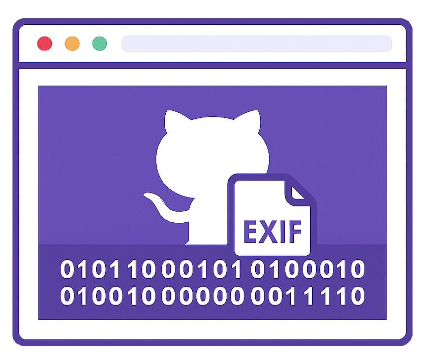
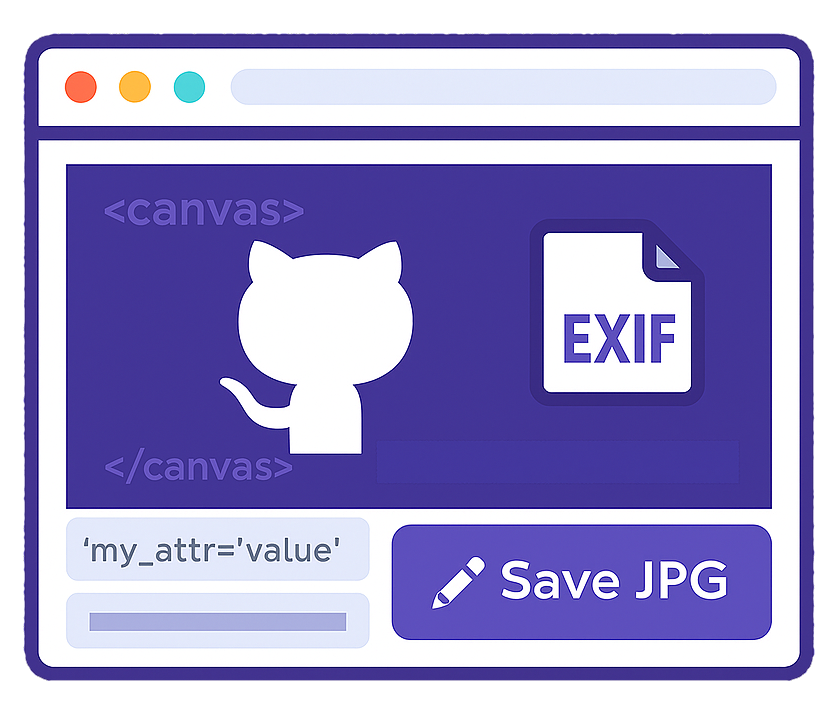

This library is a structured javascript project to analyze the EXIF part of simple JPEG images.
You can read the binary file and analyze the content.
Or, you can edit some simple tags and store the new jpeg image.
EXIF Binary reader |
Canvas EXIF |
|---|---|
|  |  |
| Read the binary file and get the position of each attribute of the JPEG image. | Add some info to your canvas generated JPEG |